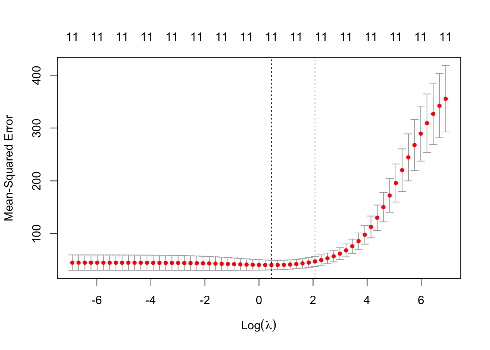

Chapter 7 Monte Carlo Simulation
7.1 Basics
Monte Carlo Simulation is a collection of computer-driven, computational algorithms that use repeated random sampling to calculate estimates. The basic steps for such a simulation are as follows:
Initialize vectors and variables
Run a simulation and calculate the estimate of interest
Save the estimate
Run the simulation “n” times
Analyze the estimates from the “n” simulations
One function that will be particularly useful for simulation is set.seed().
set.seed() allows us to replicate any simulation by giving the initial seed for the simulation. The actual number that is “seeded” is not particularly important though if you want to replicate the same simulations, you will want to re-use this number.
Example 7.1 Simulate 10 overtime coin tosses with and without using set.seed() and compare the results
# Sample 1
sample(c("H","T"),size=10,prob=c(0.5,0.5),replace=T)## [1] "T" "H" "H" "T" "T" "T" "H" "H" "H" "T"# Sample 2
sample(c("H","T"),size=10,prob=c(0.5,0.5),replace=T)## [1] "T" "H" "H" "T" "T" "H" "T" "H" "T" "H"# Sample 3
set.seed(2020)
sample(c("H","T"),size=10,prob=c(0.5,0.5),replace=T)## [1] "H" "T" "H" "T" "T" "T" "T" "T" "T" "H"# Sample 4
set.seed(2020)
sample(c("H","T"),size=10,prob=c(0.5,0.5),replace=T)## [1] "H" "T" "H" "T" "T" "T" "T" "T" "T" "H"Simulation can be very helpful when you want to estimate quantities that are not easily solved using analytical methods like formulas.
Example 7.2 Shaquille O’Neal has a career free throw percentage of 52.7%. Suppose that Shaq takes 10 free throw shots. What is the probability that he makes all 10 shots?
In this case, we can calculate the exact probability of interest using binomial random variable.
dbinom(x=10,size=10,prob=0.527)## [1] 0.001652366In more complicated simulations, there may not be an easy formula to use to calculate the value of interest. In these situations, simulation can be very helpful in estimating quantities.
set.seed(2020)
# Number of Simulations
n.sims <- 10000
# Initialize FT variable with 10000 zeros
FT <- rep(0,n.sims)
for(i in 1:n.sims){
# Simulate 10 free throws
temp <- sample(x=c(0,1), size = 10, replace = T, prob = c(0.473,0.527) )
# Count the number of free throws made and store them in FT
FT[i] <- sum(temp)
}
FT %>%
as.data.frame() %>%
ggplot(aes(x=FT)) +
geom_bar() +
ggtitle("Number of free throws made out of 10") +
scale_x_continuous(breaks = seq(0, 10, by = 2))
prob10 <- sum(FT == 10)/n.sims; prob10## [1] 0.0023prob10 <- mean(FT == 10); prob10## [1] 0.0023The estimated probability that Shaq goes 10-for-10 in free throw attempts based on his career average is 0.0023.
If we run the simulation again with a different seed, we will get another estimate (0.0019).
set.seed(1)
# Number of Simulations
n.sims <- 10000
# Initialize FT variable with 10000 zeros
FT <- rep(0,n.sims)
for(i in 1:n.sims){
# Simulate 10 free throws
temp <- sample(x=c(0,1), size = 10, replace = T, prob = c(0.473,0.527) )
# Count the number of free throws made and store them in FT
FT[i] <- sum(temp)
}
prob10 <- mean(FT == 10); prob10## [1] 0.0019As we increase the number of simulations, the estimate will become more accurate.
set.seed(1)
# Number of Simulations
n.sims <- 100000
# Initialize FT variable with 10000 zeros
FT <- rep(0,n.sims)
for(i in 1:n.sims){
# Simulate 10 free throws
temp <- sample(x=c(0,1), size = 10, replace = T, prob = c(0.473,0.527) )
# Count the number of free throws made and store them in FT
FT[i] <- sum(temp)
}
prob10 <- mean(FT==10); prob10## [1] 0.00174One way to simulate data is to make assumptions about the distributions of the underlying data. The random variables given in the last chapter as possible candidates.
7.2 Estimating Probabilities
We can use simulation to estimate probabilities of different events occurring. One way to do this is for each simulation to record a “1” if the event of interest occurs and a “0” if the event of interest does not occur.
Definition 7.1 The indicator function, \(I(A)\), is defined such that \(I(A)\) is equal to 1 if \(A\) occurs and is equal to 0 if \(A\) does not occur.
For instance, suppose we roll a die and a “6” is on top. Then we have the following: \(I(6)=1, I(5)=0, I(even)=1, I(odd)=0\).
One way to calculate probabilities is to use the following rule: \(P(A) = E[I(A)]\). The probability that \(A\) occurs is equal to the expected value of the indicator function of \(A\).
Example 7.3 During the 2021 WNBA season, Kahleah Copper of the Chicago Sky had a free throw percentage of 81.8%. She played a total of 32 games and the probability mass function for number of free throw attempts per game are given in the table below. Estimate the probability that Copper did not make a free throw in a game. [Note: Copper did not make a free throw in 6 out of the 32 games for a probability of 0.1875.]
| Free Throw Attempts Per Game, FTA | 0.000 | 1.000 | 2.00 | 3 | 4.000 | 5.000 | 6.000 | 7.000 | 8.000 |
| Number of Occurrences, nFTA | 5.000 | 2.000 | 8.00 | 0 | 7.000 | 2.000 | 4.000 | 2.000 | 2.000 |
| Probability, p(FTA) | 0.156 | 0.062 | 0.25 | 0 | 0.219 | 0.062 | 0.125 | 0.062 | 0.062 |
set.seed(2020)
n.sims <- 10000
games <- 32
FTprob <- 0.818
FTA <- 0:8
nFTA <- c(5,2,8,0,7,2,4,2,2)
pFTA <- nFTA/32
FT <- rep(0, n.sims)
FT0.ind <- rep(0,n.sims)
# Simulate the number of FTA per game
FTA.sim <- sample(x = FTA,size = n.sims,replace = T,prob = pFTA)
# Simulate 10,000 games and record number of FT made
for(i in 1:n.sims){
FT[i] <- rbinom(n=1,size = FTA.sim[i],prob = FTprob)
}
# Look at the header of the simulated data
head(FT)## [1] 6 3 0 0 1 1# Create indicator function for 0 FT made
FT0.ind = FT == 0
head(FT0.ind)## [1] FALSE FALSE TRUE TRUE FALSE FALSE# This does the same thing
mean(FT0.ind)## [1] 0.1711Example 7.4 The number of regulation goals scored in a game by Hockey Team A, \(X\), is a Poisson(4) random variable, and the same for Hockey Team B, \(Y\), is a Poisson(3.2) random variable.
A statistician is interested in the probability that Team A defeats Team B in regulation. This is \(P(X>Y)\) which is difficult to calculate manually. However, using simulation, we can straightforwardly obtain an accurate estimation of this quantity.
There are many built-in functions in R that allow users to generate realizations from common probability distributions (rnorm, rbinom, rexp, etc.) Let’s use the rpois function to simulate the appropriate variables, remembering to set a seed so that our results are easily replicable.
set.seed(2022)
n.sims <- 10000
team_A_goals <- rpois(n = n.sims, lambda = 4)
team_B_goals <- rpois(n = n.sims, lambda = 3.2)Now, to find \(P(X > Y)\), we can use the following line of code:
mean(team_A_goals > team_B_goals)## [1] 0.5415Why does this work? First, operations to vectors are executed elementwise, meaning that R compares team_A_goals[1] to team_B_goals[1], then team_A_goals[2] to team_B_goals[2], and so on. Second, logical operators are stored as zeroes (when the condition is false) and ones (when the condition is true). The mean of a vector of zeroes and ones is the proportion of ones, which is the frequency of the logical statement being true. In our simulation, it was 0.5415. The true value is 0.5427, meaning that the simulation was quite accurate.
These tips will help you be more efficient when performing simulation tasks in R.
7.3 Simulating Streaks
Streaks are often of interest to casual sports fans. Some especially famous streaks include Joe DiMaggio’s 56-game hitting streak in 1941, Wayne Gretzky’s 51 consecutive games with a point in 1983-1984, and the Chicago Cubs 108 year World Series drought.
Simulation can be helpful in quantifying the likelihood of different kinds of streaks like winning streaks or hitting streaks.
7.3.1 Winning Streak Simulation
Example 7.5 Suppose an NBA team is in the middle of a rebuild and has a 25% probability of winning each of its games in the following 82-game season. What is the probability that the team will go on at least one winning streak of four or more games over the course of the 82-game season? Use simulation to answer this question.
We can simulate a season for the team, find the longest winning streak in that season, and store it in a vector. After repeating that process 10,000 times, we can then find the proportion of the values in that vector that are greater than or equal to 4.
set.seed(2022)
n.sims <- 10000
n.games <- 82
win.prob <- 0.25
longest_streak <- rep(NA, n.sims)
for (i in 1:n.sims) {
game_results <- rbinom(size = 1, n = n.games, prob = win.prob) # 1=win, 0=loss
streaks <- rle(game_results)
longest_streak[i] <- max(streaks$lengths[streaks$values==1])
}
table(longest_streak)## longest_streak
## 1 2 3 4 5 6 7 8 9
## 116 3626 4233 1480 410 105 21 7 2mean(longest_streak >= 4)## [1] 0.2025The team had a 4+ game winning streak in about 20% of the simulations.
7.3.2 Hitting Streak Simulation
In 1941, New York Yankee Joe DiMaggio had a 56-game hitting streak which is an all-time record in MLB. How unlikely was such an outcome?
Background videos on DiMaggio’s 56 game hitting streak:
https://www.youtube.com/watch?v=Y5K49dtOKmo
https://www.youtube.com/embed/BErlc16YS8A
Example 7.6 Let’s build a simulation to estimate the probability of a hitting streak of at least 56 games using DiMaggio’s statistics. DiMaggio’s 1941 game log is contained in dimaggio41.csv.
dimaggio <- read_csv("data/dimaggio41.csv", col_names = TRUE)
names(dimaggio)## [1] "Rk" "Gtm" "Date" "Opp" "Rslt" "PA" "AB" "R" "H" "2B"
## [11] "3B" "HR" "RBI" "BB" "IBB" "SO" "HBP" "SH" "SF" "ROE"
## [21] "GDP" "SB" "CS" "BA" "OBP" "SLG" "OPS" "BOP" "aLI" "WPA"
## [31] "acLI" "cWPA" "RE24" "Pos"nrow(dimaggio)## [1] 140dimaggio %>% select(1:13) %>% slice(1:10,139:140) %>% kt()| Rk | Gtm | Date | Opp | Rslt | PA | AB | R | H | 2B | 3B | HR | RBI |
|---|---|---|---|---|---|---|---|---|---|---|---|---|
| 1 | 1 | Apr 14 | WSH | W3-0 | 4 | 4 | 0 | 2 | 0 | 1 | 0 | 1 |
| 2 | 2 | Apr 15 | PHA | L1-3 | 4 | 4 | 1 | 2 | 1 | 0 | 0 | 0 |
| 3 | 3 | Apr 16 | PHA | L7-10 | 5 | 5 | 1 | 4 | 2 | 0 | 1 | 2 |
| 4 | 4 | Apr 17 | PHA | W9-4 | 5 | 4 | 2 | 2 | 0 | 0 | 0 | 0 |
| 5 | 5 | Apr 18 | WSH | L4-7 | 4 | 4 | 1 | 1 | 0 | 0 | 0 | 1 |
| 6 | 6 | Apr 19 | WSH | W5-2 | 5 | 5 | 1 | 1 | 0 | 0 | 1 | 2 |
| 7 | 7 | Apr 20 | PHA | W19-5 | 6 | 5 | 4 | 3 | 0 | 0 | 1 | 6 |
| 8 | 8 | Apr 21 | PHA | W14-4 | 6 | 5 | 3 | 4 | 1 | 0 | 1 | 2 |
| 9 | 9 | Apr 22 | PHA | L5-6 | 4 | 3 | 1 | 0 | 0 | 0 | 0 | 0 |
| 10 | 10 | Apr 23 | BOS | W4-2 | 5 | 4 | 0 | 0 | 0 | 0 | 0 | 1 |
| 139 | 156 | Sep 28 | WSH | L0-5 | 4 | 4 | 0 | 1 | 1 | 0 | 0 | 0 |
| NA | NA | NA | NA | 90-47 | 622 | 541 | 122 | 193 | 43 | 11 | 30 | 125 |
DiMaggio played in 139 games, had 622 plate appearances, 541 at-bats, and 193 hits.
# remove last row (totals)
dimaggio <- dimaggio %>% slice(1:139)
# Create indicator variable for a hit
hit.game <- ifelse(dimaggio$H > 0,1,0)
# Use rle to calculate the streak lengths
streaks <- rle(hit.game)
table(streaks)## values
## lengths 0 1
## 1 5 2
## 2 4 3
## 3 4 2
## 4 0 2
## 5 0 1
## 7 0 1
## 8 0 1
## 16 0 1
## 56 0 1As seen above, DiMaggio had a 56-game hitting streak. An impossible feat to match?
- Create a histograms for DiMaggio’s per game plate appearances and at bats. (Hint: for discrete values,
geom_bar()is often a good option.)
library(gridExtra)
p1 <- dimaggio %>%
ggplot(aes(x=PA)) +
geom_bar() +
scale_x_continuous(breaks=0:10) +
ggtitle("DiMaggio Plate Appearances Per Game, 1941") +
xlab("Plate Appearances")
p2 <- dimaggio %>%
ggplot(aes(x=AB)) +
geom_bar() +
scale_x_continuous(breaks=0:10) +
ggtitle("DiMaggio At-Bats Per Game, 1941") +
xlab("At-Bats")
grid.arrange(p1, p2, ncol = 1)
- Create a frequency and percentage frequency table for plate appearances and at-bats.
library(janitor)
table.pa = tabyl(dimaggio,PA) %>%
adorn_totals("row") %>%
adorn_pct_formatting(digits = 1)
names(table.pa) = c("Plate Appearances", "Frequency", "Percent")
table.pa %>% kt()| Plate Appearances | Frequency | Percent |
|---|---|---|
| 2 | 2 | 1.4% |
| 3 | 4 | 2.9% |
| 4 | 70 | 50.4% |
| 5 | 56 | 40.3% |
| 6 | 5 | 3.6% |
| 7 | 1 | 0.7% |
| 9 | 1 | 0.7% |
| Total | 139 | 100.0% |
table.ab = tabyl(dimaggio,AB) %>%
adorn_totals("row") %>%
adorn_pct_formatting(digits = 1)
names(table.ab) = c("At-Bats", "Frequency", "Percent")
table.ab %>% kt()| At-Bats | Frequency | Percent |
|---|---|---|
| 2 | 7 | 5.0% |
| 3 | 37 | 26.6% |
| 4 | 63 | 45.3% |
| 5 | 30 | 21.6% |
| 6 | 1 | 0.7% |
| 8 | 1 | 0.7% |
| Total | 139 | 100.0% |
- DiMaggio had 193 hits in 622 plate appearances over 139 games. We will simulate DiMaggio’s season of 139 games 100,000 times to estimate the probability of a 56-game hitting streak.
There are many ways to do this. Let’s use the empirical probability mass function of his per game plate appearances to simulate the number of plate appearances that he gets in his 139 games.
pa <- tabyl(dimaggio,PA) %>% select(1,2)
pa <- pa %>%
as.data.frame() %>%
mutate(Prob=n/139)
# One simulated season of per game plate appearances
sim.pa <- sample(x=pa$PA,prob = pa$Prob,size=139,replace=T)
sim.pa## [1] 4 4 4 9 4 4 4 5 2 5 5 5 4 5 4 4 4 4 4 4 5 5 4 5 9 7 4 4 5 5 5 5 5 5 6 4 5
## [38] 4 5 4 5 5 4 4 5 4 5 7 2 5 4 5 4 4 4 4 4 5 4 4 4 5 6 4 4 5 4 4 5 4 5 6 4 5
## [75] 4 4 4 4 5 4 5 4 5 4 5 3 5 5 3 5 4 2 4 5 4 4 4 4 5 5 4 5 5 4 5 5 4 5 5 5 4
## [112] 5 4 4 4 5 4 5 4 4 4 4 5 5 4 4 5 5 4 5 4 4 4 4 5 4 4 5 4# DiMaggio Simulation
set.seed(2022)
n.sims <- 10000
n.games <- 139
prob.hit <- 0.310
longest.streak <- rep(0, n.sims)
sim.games <- rep(0,n.games)
for( i in 1: n.sims){
sim.pa <- sample(x=pa$PA,prob = pa$Prob,size=n.games,replace=T)
for( j in 1:n.games){
sim.games[j] <- rbinom(n = 1,size = sim.pa[j],prob = prob.hit)
}
sim.hits <- ifelse(sim.games > 0,1,0)
streaks <- rle(sim.hits)
longest.streak[i] <- max(streaks$lengths[streaks$values==1])
}
# table of longest streaks during simulated seasons
table(longest.streak)## longest.streak
## 6 7 8 9 10 11 12 13 14 15 16 17 18 19 20 21 22 23 24 25
## 3 11 38 127 306 510 756 811 908 920 807 790 685 595 474 421 333 272 258 186
## 26 27 28 29 30 31 32 33 34 35 36 37 38 39 40 41 42 43 44 45
## 142 139 100 81 68 45 51 28 22 16 13 23 14 11 7 1 5 3 4 5
## 46 47 48 49 50 56 58 59
## 2 2 2 1 1 1 1 1longest.streak %>%
as.data.frame() %>%
ggplot(aes(x=longest.streak)) +
geom_histogram(binwidth=2) +
ggtitle("Longest Hitting Streak for 10,000 Simulated DiMaggio 1941 Seasons") +
xlab("Max Hitting Streak in a Simulation Season")
mean.streak <- mean(longest.streak); mean.streak## [1] 17.2849prob56 <- mean(longest.streak>=56); prob56## [1] 3e-04We would prefer to not use nested for loops, as they are slow. Can you find a faster simulation method?
Running the simulation above with set.seed(2022) and n.sims=10000, we get \(P(Streak \geq 66) = 3 \cdot 10^{-4}\). There were three simulated hitting streaks of at least 56 games.
If we run the simulation again with set.seed(2022) but increase n.sims=100000, we get \(P(Streak \geq 66) = \frac{10}{100000} = 10^{-4}\). In other words, we estimate the probability that DiMaggio gets a hitting streak of at least 56 games in 100000 simulated seasons is about 1-in-10000.
Other authors have used different simulation and mathematical methods for estimating the rarity of Dimaggio’s 56 game hitting streak.
Billie et al (2010) used an at-bat rather than plate appearance simulation and estimated the likelihood as 1-in-5000.
Rothman et al (2010) estimated the likelihood as 1-in-10000.
7.4 Gambling Simulations
Simulation can be used to evaluate betting systems in (sports) gambling.
7.4.1 Martingale System
One such famous betting system is called a martingale system. Under this system, the bettor makes an initial wager. If they lose, they make the same wager. If they lose again, they follow a double or nothing procedure. This means that the bettor will continue betting the amount they have lost until they eventually win and get back even. What is wrong with this system?
Example 7.7 Suppose you are betting on even money sports matches where there is no house advantage, so all bets are 1:1. You begin by wagering $1 and you lose the initial bet (call it Bet Zero). You decide to employee the martingale system. Calculate the expected number of bets that you would have to make to break even. Also, create a histogram for the the biggest deficits in the simulations.
set.seed(2022)
n.sims <- 10000
sim.bets <- rep(NA,n.sims)
max.deficit <- rep(NA,n.sims)
for( i in 1:n.sims ){
bets <- 1
while( 1 ){
if( rbernoulli(n=1,0.5) ){
bets <- bets + 1
} else {
break;
}
}
sim.bets[i] <- bets
}
mean(sim.bets)## [1] 1.9996max(sim.bets)## [1] 12sim.bets %>% as.data.frame() %>%
ggplot(aes(x=sim.bets)) +
geom_histogram(breaks=0:15) +
ggtitle("Simulated Number of Money Bets to Break Even") +
xlab("Number of Bets")
On average, two bets were needed to be placed after Bet Zero to break even.
In two simulations (out of 10,000 total simulations), 12 bets were needed to be made to break even after the initial failed bet, Bet Zero. The first bet after Bet Zero was for $1. The second failed bet was from $2. The twelfth bet was for \(\$2^{11} = \$2048\). If your total bankroll was $1000, you wouldn’t have been even able to make the twelfth bet to break even. The weakness of the martingale system is that you are only guaranteed (with probability 1) to break even if you have an infinite bankroll.
The distribution in this example should look familiar. It is the geometric distribution. Let’s plot the probability mass function for a Geometric(0.5) random variable and calculate the probability that 12 or more bets are required to break even.
ggplot(transform(data.frame(x=c(0:15)), y=dgeom(x, prob = 0.5)), aes(x, y)) +
geom_bar(stat="identity") +
ggtitle("Probability mass function of Geometric(0.5) random variable") +
labs(x="Value", y="Frequency", )
# recall that R counts the number of failures before a success,
# so we will be looking for at least 11 failures
pgeom(q=11,prob=0.5,lower.tail=F)## [1] 0.0002441406There is a 0.02% chance that we will need to make 12 or more wagers. In other words, if your bankroll is $1000, there is a 0.02% you lose the full bankroll before you can break even.
This is an ideal case where you can get 1:1 odds which no sportsbook would ever consider.
Example 7.8 Repeat the above example but for -110 moneyline bets for two evenly matched opponents. Calculate the probability that you lose $1000.
7.5 Extra stuff
7.5.1 Shaq FT simulation
Example 7.9 In 1997-1998 with the Los Angeles Lakers, Shaq attempted an average of 11.35 free throws per game with a standard deviation of 4.04. While with the Lakers, Shaq played in an average of 63.6 games per year with a standard deviation of 10.6. Create a simulation to model the season total number of free throw attempts that Shaq would have while with the Lakers.
Note: his actual season totals of free throws attempted while with the Lakers were: 479, 681, 498, 824, 972, 712, 725, 676
Let’s model the number of games that Shaq played in as a Binomial random variable. There are 82 regular sesaon games, so let \(n=82\). Shaq played in an average of 63.6 games, so let \(p=\frac{64.25}{82}=0.784\). Shaq played in about 78% of the games during his career with the Lakers.
For the number of free throw attempts per game, we could model this as a Poisson random variable or a Negative Binomial random variable. As noted in the previous chapter, the variance of Shaq’s FT attempts is a fair bit greater than the mean which means that it is overdispersed. Negative Binomial may be a more appropriate model than a Poisson. From last chapter, we found \(\hat{r}=25.85\) and \(\hat{p}=0.305\).
set.seed(2020)
n.sims <- 10000
FT <- rep(0,n.sims)
# simulate the number of games played in a season, round to a whole number
games.sim <- rbinom(n = n.sims,size = 82,prob = 0.784)
# number of games can't exceed 82 games (regular season total)
games.sim[games.sim>82] = 82
for(i in 1:n.sims){
# simulate the season total FT attempts in each simulation
temp <- rnbinom(n = games.sim[i],size = 25.85,prob = 1-0.305)
FT[i] <- sum(temp)
}
# Simulated mean and SD of season totals of free throw attempts
c(mean(FT),sd(FT))## [1] 730.47550 53.20566# Actual mean and SD of season totals of free throw attempts
FT.actual <- c(479, 681, 498, 824, 972, 712, 725, 676)
FT.actual.mean <- mean(FT.actual)
FT.actual.var <- var(FT.actual) * 7/8 # population variance
FT.actual.sd <- sqrt(FT.actual.var)
c(FT.actual.mean,FT.actual.sd)## [1] 695.8750 150.2393FT %>% as.data.frame() %>%
ggplot(aes(x=FT)) +
geom_histogram(bins=30,color = "yellow", fill = "purple") +
ggtitle("Simulated Season FT Attempt Totals by Shaq with Lakers")
Notice that the mean of our simulation is somewhat close to Shaq’s true season average number of free throw attempts but the variance of the simulation is far too low.
We can also simulate data using resampling. In this case, rather than simulating random variables according to a distribution, we can use our actual data as a sampling distribution.
Example 7.10 Using resampling, simulate the number of free throws Shaq would attempt while with the Lakers. Compare the mean and variance of the simulation to Shaq’s actual statistics.
set.seed(2020)
n.sims <- 10000
FT <- rep(0,n.sims)
shaq.games <- c(51,60,49,79,74,67,67,67)
shaq.FTA <- read_csv("data/shaqFT.csv", col_names = FALSE)
shaq.FTA <- shaq.FTA$X1
# sample (with replacement) from Shaq's FTA game totals
games.sim <- sample(x = shaq.games,size = n.sims,replace = T)
for(i in 1:n.sims){
# sample (with replacement) from Shaq's FTA game totals
temp <- sample(x = shaq.FTA,size = games.sim[i],replace = T)
FT[i] <- sum(temp)
}
# Simulated mean and SD of season totals of free throw attempts
c(mean(FT),sd(FT))## [1] 695.8883 112.6666# Actual mean and SD of season totals of free throw attempts
FT.actual <- c(479, 681, 498, 824, 972, 712, 725, 676)
FT.actual.mean <- mean(FT.actual)
FT.actual.var <- var(FT.actual) * 7/8 # population variance
FT.actual.sd <- sqrt(FT.actual.var)
c(FT.actual.mean,FT.actual.sd)## [1] 695.8750 150.2393FT %>% as.data.frame() %>%
ggplot(aes(x=FT)) +
geom_histogram(bins=30,color = "yellow", fill = "purple") +
ggtitle("Simulated Season FT Attempt Totals by Shaq with Lakers")
This simulation is biased low on the variance but is better than the earlier simulation.
One reason that you may want to do complicated simulations like the example above is to make predictions for a player’s future seasons.